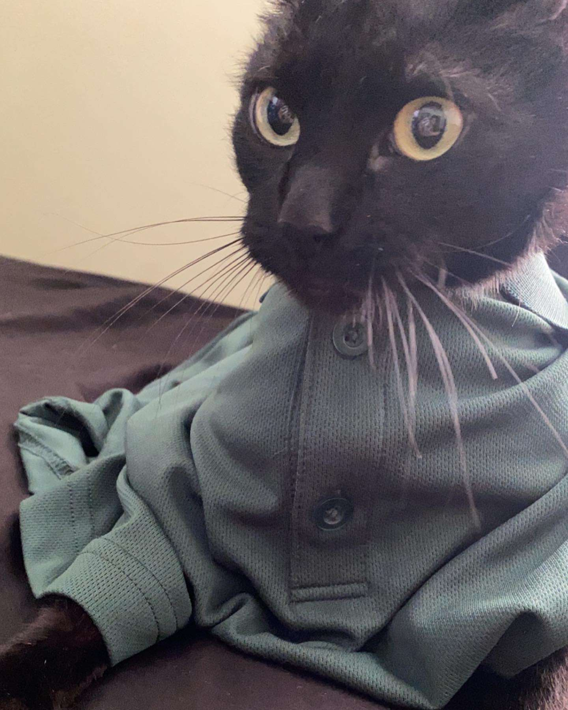

Espresso/Salem
Espresso was the first cat we adopted, She was living in a household where a family had just had thier second child and Espresso had a hard time adjusting to the new energy in the house. since she has always been a lazy and relaxed cat, her owners decided it was for the best to put her up for adoption. Her original owners had her named as Salem, but we were told we can name her something else if we wanted and we decided upon Espresso. She is more on the lazy side, she loves to nap all day long only getting up to eat and drink.
Katsu/Elizabeth
Katsu was our second cat that we adopted from a sponsorship home. She has always been a little energetic kitten since we first met. As she is growing we are learning to be more patient with the cat and train her so she is not always rowdy and wild. Her Sponsors named her Elizabeth while she was living with them until she awaited her new home.
Nermal
Nermal was found at Jackie's work. When she left for work there was a cat in a carrier. Since we were going through a heatwave she decided to bring her home and give her some shelter for the time being. As the days passed we took her to get examined at the vet and Jackie's sister named the stray cat "Nermal". Nermal and Katsu were always going at it when Nermal joined the household, however they have learned to get along with each other.